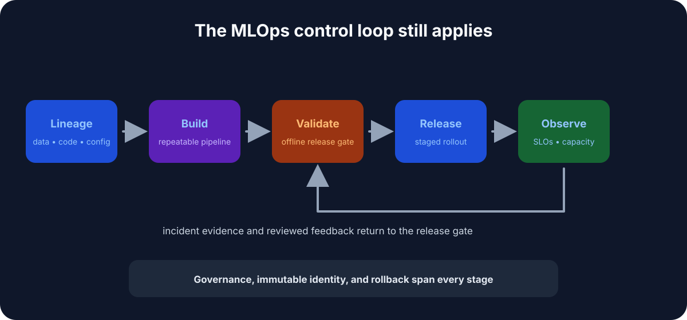
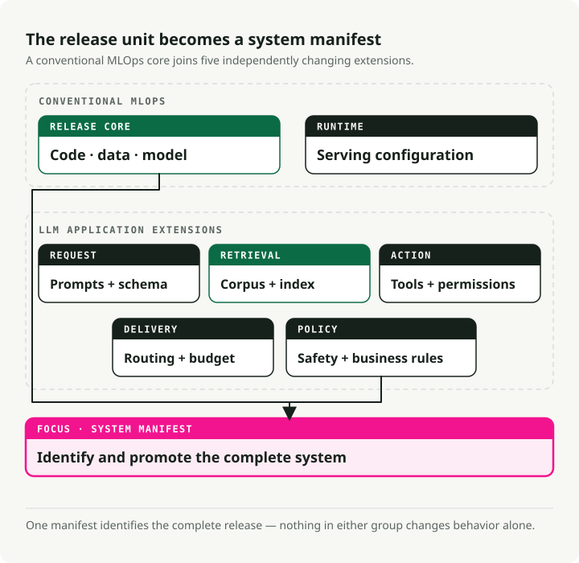
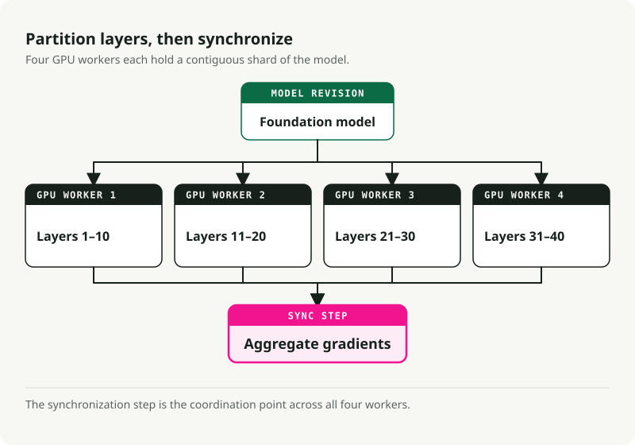
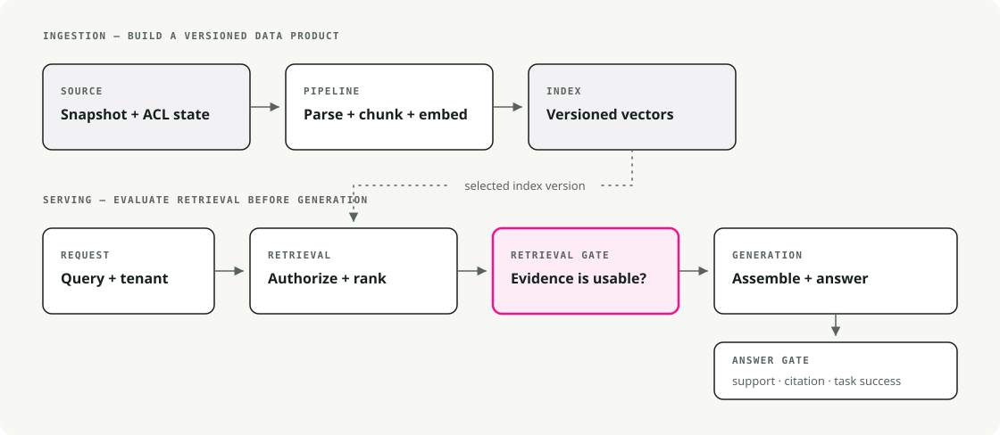
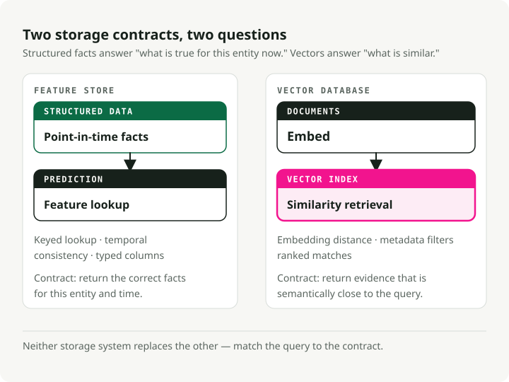
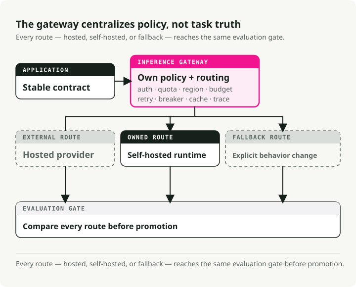
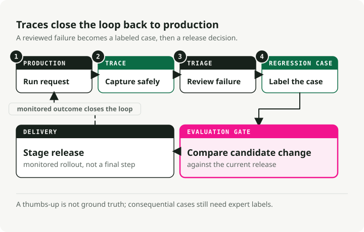

MLOps vs LLMOps: Infrastructure for Foundation Models and LLM Systems
Foundation models broke most of the assumptions classic MLOps was built on. This is a walk-through of what changed, what stuck around, and the patterns that filled the gap.
Classic MLOps before foundation models
A few years back, MLOps mostly meant DevOps for ML — automate the lifecycle from data prep through deployment to monitoring. Models were small enough to train from scratch on domain data, and the infrastructure reflected that.

1.1. End-to-end pipelines
Teams built pipelines for data extraction, training, validation, and deployment. Airflow handled ETL and training orchestration. CI/CD ran tests and pushed models to production. Models shipped as Docker containers serving REST endpoints or batch jobs. The point of all of it was reproducibility and automation.
1.2. Experiment tracking and model versioning
MLflow and Weights & Biases were the standard for logging runs, hyperparameters, and metrics. Data scientists could compare experiments and reliably reproduce results. Model registries gave you version numbers, which made rollbacks straightforward when a fresh model underperformed.
1.3. Continuous training & CI/CD
Pipelines were geared around continuous integration of new data. A typical setup retrained nightly or weekly as data arrived, ran a test battery, and auto-deployed if everything passed. Jenkins and GitLab CI/CD made sure any change in data or code triggered the pipeline reliably.
1.4. Infrastructure and serving
Serving was a relatively small footprint — a few CPU cores or a single GPU for real-time inference. Kubernetes and Docker were the default for scalable inference services. Monitoring covered three things: performance metrics (latency, throughput, memory), model metrics (accuracy, drift), and system health (uptime, error rates).
1.5. Feature stores and data management
For finance and e-commerce, engineered features mattered as much as the model. Feature stores gave you a central place to manage them and kept training and serving consistent. Structured data and feature engineering were the center of gravity. Unstructured data — text, images — got handled separately, outside these stores.
This setup worked fine until models started getting much bigger.
2. The paradigm shift: rise of large-scale foundation models
Around 2018–2020, the picture changed quickly. Researchers began releasing foundation models — very large models pretrained on broad corpora that could be adapted to many tasks.
The progression was fast:
- 2018–2019: BERT and GPT-2 made transfer learning credible at scale.
- 2020–2021: GPT-3 and PaLM showed what raw scale could do.
- 2021–2023: Image models like DALL-E and Stable Diffusion pushed generative AI mainstream.
- 2023–2024: Foundation models became default infrastructure — available on Hugging Face, AWS Bedrock, Vertex AI Model Garden, and direct from API providers.

Here's what foundation models actually changed about ML infrastructure.
2.1. Pretrained beats from scratch
Instead of training from scratch, teams started with a pretrained model and fine-tuned for the task. Training time dropped from weeks to hours. Data requirements dropped from millions of examples to thousands. Smaller teams could ship serious AI products without a research org behind them.
The largest models (billions of parameters) are usually used as-is via APIs or fine-tuned with light adapters. The job description shifted: less "how do I build a model?" and more "how do I use and integrate one?"
2.2. Model size and computational demands
At LLM scale, the rest of the stack has to change too. A 175B-parameter model isn't just a bigger 50M one — it doesn't fit on the same hardware, doesn't train the same way, and doesn't serve the same way.
The headaches:
- Training wants powerful hardware (GPUs, TPUs) and distributed compute.
- Model parallelism shards a single model across multiple GPUs.
- Data parallelism synchronizes many GPU workers during training.
- Inference often needs multiple GPUs or specialized runtimes to keep latency in line.
DeepSpeed and ZeRO (Zero Redundancy Optimizer) showed up specifically to make training huge models tractable. Infrastructure requirements jumped by orders of magnitude.
2.3. The emergence of LLMOps
Running these models in production needed extensions to classic MLOps. That gave us LLMOps — MLOps specialized for large models, with the same principles but a different surface of problems:
- Compute: managing expensive GPU clusters, not CPU pools.
- Prompt engineering: shaping behavior through input design.
- Safety monitoring: detecting bias, harmful content, and data leakage.
- Performance management: balancing latency, quality, and cost per token.
Issues that barely registered for smaller models — biased text, leaked training data — became real risks at LLM scale.

NVIDIA's diagram captures how these specialties nest: classic MLOps on the outside, then GenAI Ops (any generative model), then LLMOps (large language models specifically), then RAGOps for retrieval-augmented systems. The point of the nesting is that each inner ring builds on the practices of the outer ones — it doesn't replace them.
2.4. Foundation models as a service
The other big shift: many applications no longer host their own models, they call someone else's. OpenAI, Cohere, and AI21 Labs offer hosted LLMs. Google Vertex AI ships a Model Garden of pretrained models. AWS Bedrock hosts proprietary foundation models. Hugging Face hosts thousands of open weights you can pull or run in the cloud.
This rearranges the architecture. Production pipelines call external APIs for inference, which gets you out of GPU management but pulls in new costs:
- Latency: network round-trips add overhead.
- Cost: pay-per-token pricing means usage spikes hit the bill directly.
- Data privacy: anything sent to a vendor leaves your perimeter.
- Vendor lock-in: API behavior, pricing, and policies are not yours to control.
The trade-off works for most teams. Managing your own LLM serving stack is a real engineering investment, and not always one you want.
3. New requirements and capabilities in modern ML infrastructure
Modern ML infrastructure has to support things that were niche or non-existent a few years ago. The ones that come up most:
3.1. Distributed training and model parallelism
Training a billion-parameter model is past the capacity of a single machine. Modern infrastructure orchestrates training across many nodes:

Two main splits matter:
- Model parallelism: split the model's layers across GPUs (each GPU runs part of the forward pass).
- Data parallelism: replicate the model across GPUs and split the training data, then sync gradients.
PyTorch Lightning and Horovod handle general distributed training. NVIDIA's Megatron-LM is the go-to for massive transformers. Google's JAX/TPU stack covers TPU clusters.
A few years ago, most teams trained on a single server. Now ML platforms launch jobs on GPU clusters, manage faults, and aggregate gradients from dozens or hundreds of workers without the engineer having to think about it.
3.2. Efficient fine-tuning techniques
Even fine-tuning a multi-billion-parameter model can be expensive. Parameter-efficient methods exist for exactly this reason:
- LoRA (Low-Rank Adaptation): train a small set of adapter parameters; the base weights stay frozen. Big drop in compute and memory.
- Prompt tuning: optimize only the prompt embeddings; the model itself is frozen.
- Adapter modules: insert small trainable layers between frozen ones.
Configuring LoRA with peft:
from peft import LoraConfig, get_peft_model
# Configure LoRA
peft_config = LoraConfig(
r=16,
lora_alpha=32,
target_modules=["q_proj", "v_proj"],
lora_dropout=0.05,
bias="none",
task_type="CAUSAL_LM"
)
# Apply to base model
model = get_peft_model(base_model, peft_config)
model.print_trainable_parameters()
Infrastructure has to support the multi-step workflow: pull a base model from a hub, apply fine-tuned weight deltas, deploy the combined thing. Traditional pipelines had to evolve to handle this customization step.
3.3. Prompt engineering & management
The new artifact in modern ML pipelines is the prompt. With LLMs, the prompt drives a lot of what the model does — far more than feature vectors ever did in classic ML.
That has practical consequences. Teams now maintain prompt libraries, version them like code, A/B test variants, and store prompt versions next to model versions in the registry. This is genuinely different from classic ML, where inputs were just feature vectors. Frameworks like LangChain treat prompt optimization as a first-class feature.
A simple evolution looks like this:
v1: "Classify this text as positive or negative: {text}"
v2: "You are a sentiment analyzer. Classify: {text}"
v3: "Analyze sentiment. Return only 'positive' or 'negative': {text}"
Each version produces different results. Tracking and testing prompts ends up being as important as tracking model weights.
3.4. Retrieval-Augmented Generation (RAG)
Foundation models have a fixed knowledge cutoff and a finite context window. To keep responses current and grounded, Retrieval-Augmented Generation (RAG) has become standard practice.

Rather than constantly retraining a model on new data — which is slow and expensive — RAG fetches relevant documents at query time and appends them to the prompt as context.
A simplified RAG chain in LangChain:
from langchain.vectorstores import Pinecone
from langchain.llms import OpenAI
from langchain.chains import RetrievalQA
# 1. Load the vector database
vector_db = Pinecone.from_existing_index("my-index", embeddings)
# 2. Initialize the LLM
llm = OpenAI(temperature=0)
# 3. Create the RAG chain
qa_chain = RetrievalQA.from_chain_type(
llm=llm,
chain_type="stuff",
retriever=vector_db.as_retriever()
)
# 4. Ask a question
response = qa_chain.run("How does LLMOps differ from MLOps?")
The new infrastructure pieces:
- Vector databases (Pinecone, Weaviate, FAISS, Milvus) for fast similarity search over embeddings.
- Embedding models to turn documents and queries into vectors.
- Index management to keep embeddings in sync with the source of truth.
Vector databases have largely taken over the role traditional feature stores played. Unstructured data and semantic search are where the action is now, not manual feature engineering.
3.5. Data streaming and real-time data feeds
Modern applications — especially LLM-powered assistants — ingest data continuously: chat conversations, sensor data, event streams. That data needs to update model knowledge (via RAG) or trigger responses live.
Classic MLOps was batch-oriented (daily or weekly retraining). Modern LLMOps tends to be stream-oriented: Kafka and event streaming platforms, real-time databases (Redis, DynamoDB), online feature stores with continuous updates, and streaming embedding pipelines that keep vector indexes fresh.
The line between data engineering and MLOps has blurred. Data pipelines now feed inference directly, not just training.
3.6. Scalable and specialized serving infrastructure
Serving a massive model is its own engineering project. Three capabilities matter most.
High-throughput, low-latency serving. Interactive applications need fast responses. That means GPU/TPU acceleration, model quantization to compress weights and speed up inference, GPU batching to serve multiple requests in parallel, and optimized engines like NVIDIA's TensorRT, Triton Inference Server, or DeepSpeed-Inference.
Serverless and elastic scaling. Platforms like Modal pitch themselves as "AWS Lambda but with GPU support" — you bring code, they handle infrastructure and scaling. You don't pay for idle servers, compute spins up on demand, scales to zero when nothing's happening, and grows under load. The catch is cold-start latency, statelessness, and less control over the runtime. It's a good fit for irregular workloads where keeping a GPU cluster warm doesn't make sense.
Distributed model serving. For models too large for a single GPU, inference itself gets distributed. The model is sharded across machines, each handling part of the forward pass. Serving a 175B-parameter model on-prem realistically means multiple GPUs cooperating. Modern infrastructure has to launch distributed inference replicas and route requests to the right shard.
3.7. Monitoring, observability, and guardrails
Large models can produce wrong or unsafe outputs in ways small models couldn't. Monitoring has three layers now.
Performance and reliability. The basics still apply: latency, throughput, memory, GPU utilization, cost. Autoscaling matters more because GPU minutes are expensive — fall back to a smaller model under load if the big one isn't worth the queue.
Output quality and safety. Now you watch what the model says, not just whether it responded. Content filtering for hate speech, PII, and harmful content. Moderation APIs (OpenAI's or your own). Continuous bias evaluation. Guardrails that intercept adversarial inputs and keep outputs in scope. None of these are optional in production LLMOps.
Feedback loops. Continuous improvement now includes humans. Collect interactions (likes, corrections, ratings), use them to fine-tune or adjust prompts, and for high-stakes systems run RLHF (Reinforcement Learning from Human Feedback) to encode preferences into the model. The infrastructure has to capture and manage this feedback data securely.
4. Evolving system architecture and design patterns
So with all these new requirements, how are ML systems actually built today? A few patterns keep showing up.
4.1. Modular pipelines & orchestration
Classic tools (Kubeflow Pipelines, Apache Airflow) are still around for fine-tuning workflows, batch scoring, and periodic retraining. Newer tools — Metaflow, Flyte, ZenML — give you Pythonic workflows that plug directly into ML libraries. For low-latency inference, application code often replaces a heavyweight workflow engine entirely.
The practical change: engineers don't need to leave their development environment to manage the path from data to deployment.
4.2. Model hubs and registries
Model management moved to centralized hubs. Hugging Face Hub hosts thousands of models, datasets, and scripts — a one-stop shop with plug-and-play architecture (fetch models at startup). Internal registries like MLflow and SageMaker Model Registry handle bespoke models, often combined with external foundation models.
The shift: instead of building everything in-house, engineers plan for how to fine-tune and adapt third-party models. That's a different mental model and a much faster one.
4.3. Feature stores vs. vector databases
The data layer changed shape:

Traditional feature stores handled structured data with manual feature engineering. Modern vector databases (Pinecone, Weaviate, Chroma, Milvus) handle high-dimensional embeddings, fast similarity search, semantic deduplication, and RAG.
In real systems you'll see both: a vector DB for unstructured semantic lookup and a data warehouse for structured analytics. They aren't substitutes.
4.4. Unified platforms (end-to-end)
The complexity of modern ML pushed teams toward end-to-end platforms that abstract the infrastructure layer.
The big cloud platforms have leaned in:
- Google Vertex AI: auto-distributed training on TPU pods, Model Garden with LLMs, one-click deployment.
- AWS SageMaker: distributed training, model parallelism, plus Bedrock for hosted foundation models.
- Azure ML: integrated training, deployment, and monitoring.
These give you managed services like "fine-tune this 20B-parameter model on your data" or "embed and index your text for retrieval." Open-source and startup tooling fills in alongside: MosaicML (now Databricks) for efficient training and deployment of large models, Argilla and Label Studio for data labeling and prompt dataset creation, ClearML and MLflow for experiment tracking tied to pipeline execution.
4.5. Inference gateways and APIs
Once you have models of multiple sizes, you need a way to route requests intelligently. That's an inference gateway:

Useful for routing based on latency requirements, serving different models to different subscription tiers, A/B testing new models on a fraction of traffic, and falling back to smaller models under high load. The gateway decouples the client-facing API from model implementation, which makes swaps and experiments much less disruptive.
4.6. Agentic systems
The newest pattern is AI agents — systems that pick sequences of actions dynamically instead of running a fixed chain. An agent can call external tools (calculators, search engines, databases), decide its workflow at runtime based on context, and invoke different models for different subtasks.
Frameworks like LangChain's agent mode, OpenAI's function calling, and AutoGPT-style systems make this practical. The operational practices that come with it (sometimes called "AgentOps") aren't optional: monitoring to catch unwanted actions, detailed logging to trace decision paths, and guardrails to limit what the agent is allowed to do.

Agentic systems aren't yet widespread in production, but a lot of the LLMOps frontier sits there.
5. Getting started with LLMOps
If you're new to all of this, the LLMOps ecosystem is a lot to take in. Here's the path I'd suggest:
- Play with APIs. Start with OpenAI or Anthropic to get a feel for prompt engineering.
- Build a RAG app. Use LangChain or LlamaIndex to ship a "Chat with your PDF" demo. You'll touch vector databases and retrieval along the way.
- Try fine-tuning. Use Hugging Face to fine-tune a small model (Llama-3-8B or Mistral-7B) on a custom dataset in Google Colab.
- Deploy. Run vLLM or Ollama locally first, then move it to a cloud provider.
6. Conclusion: from MLOps to LLMOps and beyond
The MLOps fundamentals — automation, reproducibility, reliable deployment — still hold. What changed is the scale (billions of parameters), the approach (adapt foundation models instead of training from scratch), the data layer (vector databases sharing the floor with feature stores), and the monitoring surface (content safety, not just latency). LLMOps came out of those changes. The next wave — AgentOps and RAGOps — is doing the same thing one layer up.